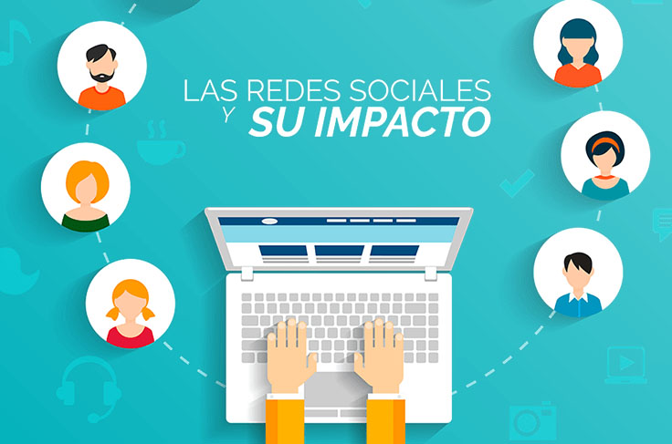

Este fenómeno ha revolucionado la interacción humana, transformando el modelo tradicional unidireccional en un diálogo bidireccional, instantáneo y global. Estas plataformas facilitan la inmediatez, la viralidad de la información y la conexión constante, pero también fomenta riesgos como noticias falsas, malentendidos y soledad.
Las redes sociales han evolucionado significativamente desde los inicios de internet. Sus orígenes se remontan a finales de la década de 1990 con la aparición de sitios como Six Degrees, lanzada en 1997 por Andrew Weinreich, fue reconocida como la primera red social de internet. Permitía a los usuarios crear perfiles, listar amigos y familiares, y conectarse con otros usuarios a través de sus redes de conocidos, basándose en la teoría de los seis grados de separación, Friendster, la cual fue una red social pionera lanzada en 2002 por Jonathan Abrams. Se centraba en conectar personas a través de círculos de "amigos de amigos", superando los 3 millones de usuarios en 2003 y MySpace el cual es un sitio web intercomunicativo formado por perfiles personales de usuarios, los cuales acceden a música, videos, imágenes y blogs compartidos por otros perfiles
Sin embargo, no fue hasta el lanzamiento de Facebook en 2004 que las redes sociales se popularizaron. Fue seguido por plataformas como Twitter, LinkedIn y YouTube, revolucionó la interacción en línea, permitiendo a los usuarios compartir sus pensamientos, imágenes, vídeos y opiniones en tiempo real con una audiencia global.
En la década del 2010, el auge de plataformas visuales como Instagram, Snapchat y TikTok marcó una nueva era en las redes sociales, donde el énfasis pasó del contenido escrito a la comunicación multimedia.
Estas plataformas aprovecharon el creciente deseo de contenido breve y gratificación instantánea, atrayendo especialmente a las audiencias más jóvenes.
El papel de las redes sociales en la actualidad
Las redes sociales han alterado la forma en que las personas se comunican. Desde las interacciones personales hasta el discurso público, las plataformas de redes sociales han transformado los métodos de comunicación tradicionales.
Uno de los cambios más significativos es el paso de la comunicación unidireccional a las interacciones bidireccionales o incluso multidireccionales. Mientras que los medios tradicionales como los periódicos, la televisión y la radio eran en gran medida unilaterales, con el contenido fluyendo del editor o emisora a la audiencia, las redes sociales permiten una interacción constante entre usuarios, marcas e incluso gobiernos.

Para las empresas, las redes sociales se han convertido en una herramienta esencial para el marketing, la interacción con el cliente y la construcción de marca. Plataformas como LinkedIn, que es la mayor red profesional del mundo en internet, diseñada para conectar a trabajadores, empresas y profesionales de todos los sectores; Twitter e Instagram permiten a las empresas interactuar directamente con los clientes, ofrecer promociones y compartir novedades.
Uno de los desafíos más importantes que plantean las redes sociales es la propagación de desinformación y noticias falsas (fake news). Debido a la facilidad para compartir contenido, la información inexacta o engañosa puede difundirse rápidamente, a veces con consecuencias en el mundo real.
Otro desafío es la privacidad y la seguridad de los datos. Las plataformas de redes sociales recopilan grandes cantidades de datos personales de sus usuarios, a menudo sin consentimiento explícito ni transparencia. Estos datos pueden ser utilizados indebidamente por anunciantes, hackers o incluso gobiernos, lo que genera preocupación por las violaciones de la privacidad y la vigilancia.
El impacto de las redes sociales en la salud mental es un tema de creciente preocupación. Diversos estudios han demostrado que el uso excesivo de las redes sociales puede provocar problemas como ansiedad, depresión y baja autoestima, especialmente entre los usuarios más jóvenes. La constante comparación con imágenes idealizadas de otras personas, el ciberacoso y la presión por mantener una imagen pública en línea pueden tener efectos negativos en el bienestar mental. La naturaleza adictiva de las redes sociales también contribuye a la sobrecarga de tiempo frente a la pantalla, lo cual se ha relacionado con la privación del sueño y el stress.
De cara al futuro, es probable que las redes sociales estén marcadas por varias tendencias emergentes. Un área clave es el auge de la Realidad Aumentada (RA) y la Realidad Virtual (RV), que cambiarán la forma en que los usuarios interactúan con las plataformas.
Además, la Inteligencia Artificial (IA) y el aprendizaje automático desempeñarán un papel cada vez más importante en la configuración de las experiencias de usuario, desde recomendaciones de contenido personalizadas hasta atención al cliente automatizado.
A medida que crecen los desafíos de la desinformación y las preocupaciones de la privacidad, es posible que aumente la presión por la regulación y la rendición de cuentas. Los gobiernos, las empresas tecnológicas y los usuarios deberán encontrar la manera de equilibrar la libertad de expresión con la necesidad de seguridad y veracidad.
Las redes sociales han transformado la comunicación de manera profunda, influyendo en cómo las personas interactúan, comparten información y se relacionan con el mundo que las rodea.
De cara al futuro, las redes sociales seguirán evolucionando con nuevas tecnologías, cambios en las expectativas sociales y modificaciones en los referentes regulatorios. Comprender estos avances es fundamental para desenvolvernos en el complejo y cambiante panorama de la comunicación digital global en el mundo actual.